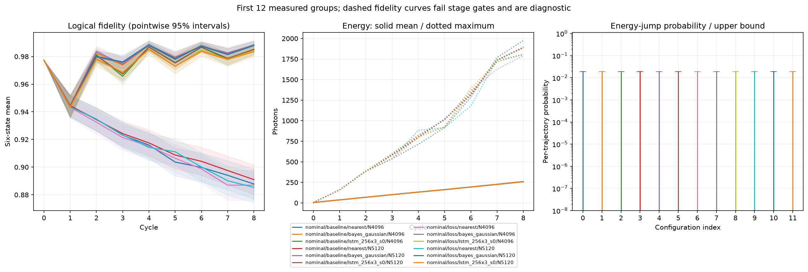

13/20 jobs executed. Classification: benchmark_observations. Numerical certification requires scoring, cutoff and independent-instrument checks in addition to stage gates.

Plots show up to12 measured groups; all groups are in JSON/CSV. Results after failed numerical gates are diagnostic. Intervals on incomplete groups are interim descriptions.
| Configuration | Chunks | Stage gates | Final mean fidelity |
|---|---|---|---|
| nominal/baseline/nearest/N4096 | 1/1 | pass | 88.7839% |
| nominal/baseline/bayes_gaussian/N4096 | 1/1 | pass | 98.8304% |
| nominal/baseline/lstm_256x3_s0/N4096 | 1/1 | pass | 98.5064% |
| nominal/baseline/nearest/N5120 | 1/1 | pass | 89.0996% |
| nominal/baseline/bayes_gaussian/N5120 | 1/1 | pass | 98.8344% |
| nominal/baseline/lstm_256x3_s0/N5120 | 1/1 | pass | 98.5122% |
| nominal/loss/nearest/N4096 | 1/1 | pass | 88.6999% |
| nominal/loss/bayes_gaussian/N4096 | 1/1 | pass | 98.8537% |
| nominal/loss/lstm_256x3_s0/N4096 | 1/1 | pass | 98.4312% |
| nominal/loss/nearest/N5120 | 1/1 | pass | 88.5364% |
| nominal/loss/bayes_gaussian/N5120 | 1/1 | pass | 98.7910% |
| nominal/loss/lstm_256x3_s0/N5120 | 1/1 | pass | 98.3380% |
| nominal/dephasing/nearest/N4096 | 1/1 | pass | 88.2297% |
| nominal/dephasing/bayes_gaussian/N4096 | 1/1 | pass | 98.7084% |
| nominal/dephasing/lstm_256x3_s0/N4096 | 1/1 | pass | 98.6125% |
| nominal/dephasing/nearest/N5120 | 1/1 | pass | 88.1967% |
| nominal/dephasing/bayes_gaussian/N5120 | 1/1 | pass | 98.6807% |
| nominal/dephasing/lstm_256x3_s0/N5120 | 1/1 | pass | 98.5212% |
| nominal/loss_dephasing/nearest/N4096 | 1/1 | pass | 87.6706% |
| nominal/loss_dephasing/bayes_gaussian/N4096 | 1/1 | pass | 98.5909% |
| nominal/loss_dephasing/lstm_256x3_s0/N4096 | 1/1 | pass | 98.1657% |
| nominal/loss_dephasing/nearest/N5120 | 1/1 | pass | 87.7844% |
| nominal/loss_dephasing/bayes_gaussian/N5120 | 1/1 | pass | 98.6751% |
| nominal/loss_dephasing/lstm_256x3_s0/N5120 | 1/1 | pass | 98.3601% |
| nominal/inefficient_detector/nearest/N4096 | 1/1 | pass | 75.3058% |
| nominal/inefficient_detector/bayes_gaussian/N4096 | 1/1 | pass | 83.8459% |
| nominal/inefficient_detector/lstm_256x3_s0/N4096 | 1/1 | pass | 81.1881% |
| nominal/inefficient_detector/nearest/N5120 | 1/1 | pass | 74.9903% |
| nominal/inefficient_detector/bayes_gaussian/N5120 | 1/1 | pass | 83.7692% |
| nominal/inefficient_detector/lstm_256x3_s0/N5120 | 1/1 | pass | 81.2530% |
| nominal/electronic_readout/nearest/N4096 | 1/1 | pass | 88.0574% |
| nominal/electronic_readout/bayes_gaussian/N4096 | 1/1 | pass | 98.4973% |
| nominal/electronic_readout/lstm_256x3_s0/N4096 | 1/1 | pass | 98.2072% |
| nominal/electronic_readout/nearest/N5120 | 1/1 | pass | 88.3116% |
| nominal/electronic_readout/bayes_gaussian/N5120 | 1/1 | pass | 98.5751% |
| nominal/electronic_readout/lstm_256x3_s0/N5120 | 1/1 | pass | 98.1740% |
| nominal/coupling_error/nearest/N4096 | 1/1 | pass | 85.8736% |
| nominal/coupling_error/bayes_gaussian/N4096 | 1/1 | pass | 97.9618% |
| nominal/coupling_error/lstm_256x3_s0/N4096 | 1/1 | pass | 97.2883% |
| nominal/coupling_error/nearest/N5120 | 0/1 | failed/pending | pending |
| nominal/coupling_error/bayes_gaussian/N5120 | 0/1 | failed/pending | pending |
| nominal/coupling_error/lstm_256x3_s0/N5120 | 0/1 | failed/pending | pending |
| nominal/control_rotation/nearest/N4096 | 0/1 | failed/pending | pending |
| nominal/control_rotation/bayes_gaussian/N4096 | 0/1 | failed/pending | pending |
| nominal/control_rotation/lstm_256x3_s0/N4096 | 0/1 | failed/pending | pending |
| nominal/control_rotation/nearest/N5120 | 0/1 | failed/pending | pending |
| nominal/control_rotation/bayes_gaussian/N5120 | 0/1 | failed/pending | pending |
| nominal/control_rotation/lstm_256x3_s0/N5120 | 0/1 | failed/pending | pending |
| nominal/finite_duration_lumped/nearest/N4096 | 0/1 | failed/pending | pending |
| nominal/finite_duration_lumped/bayes_gaussian/N4096 | 0/1 | failed/pending | pending |
| nominal/finite_duration_lumped/lstm_256x3_s0/N4096 | 0/1 | failed/pending | pending |
| nominal/finite_duration_lumped/nearest/N5120 | 0/1 | failed/pending | pending |
| nominal/finite_duration_lumped/bayes_gaussian/N5120 | 0/1 | failed/pending | pending |
| nominal/finite_duration_lumped/lstm_256x3_s0/N5120 | 0/1 | failed/pending | pending |
| nominal/passive_cooling/nearest/N4096 | 0/1 | failed/pending | pending |
| nominal/passive_cooling/bayes_gaussian/N4096 | 0/1 | failed/pending | pending |
| nominal/passive_cooling/lstm_256x3_s0/N4096 | 0/1 | failed/pending | pending |
| nominal/passive_cooling/nearest/N5120 | 0/1 | failed/pending | pending |
| nominal/passive_cooling/bayes_gaussian/N5120 | 0/1 | failed/pending | pending |
| nominal/passive_cooling/lstm_256x3_s0/N5120 | 0/1 | failed/pending | pending |
Counts, fixed-budget intervals and completeness · Frozen plan